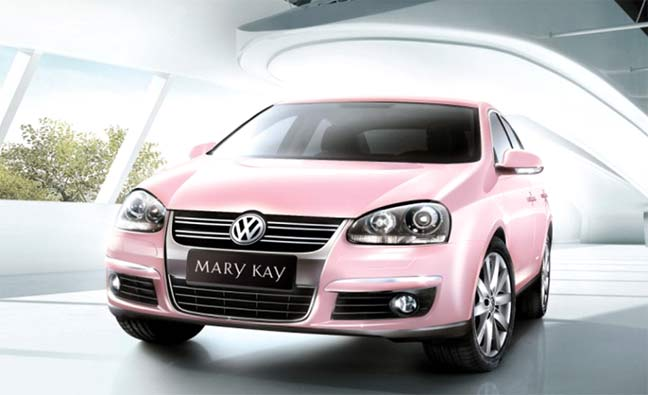
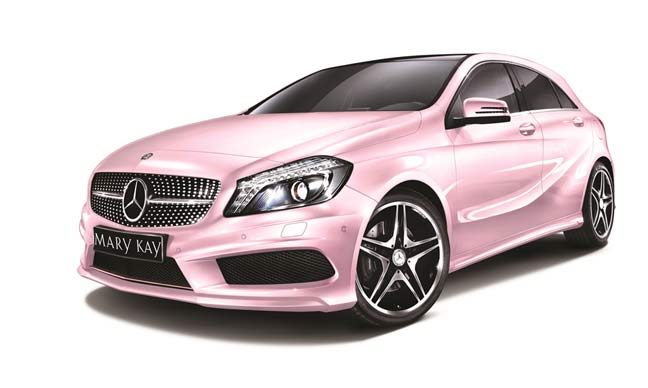
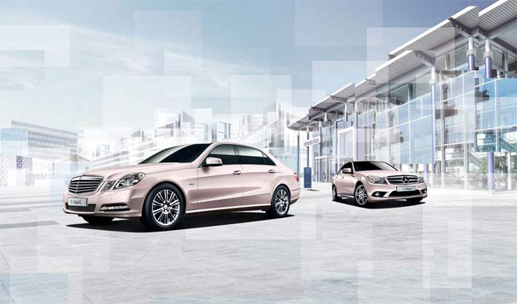

近半个世纪以来，久负盛名的玫琳凯粉红色轿车以其独特的色彩和传奇的故事成为了玫琳凯的重要标志之一。

1968年，玫琳凯公司的创始人玫琳凯•艾施女士在为自己选购新轿车时突发奇想，当销售员询问她想要什么颜色的轿车时，她从包里取出一块粉红色的唇膏眼影调色板，说：“我就要这个颜色。”第一辆粉红色轿车就此诞生。
这一辆粉红色的凯迪拉克轿车是如此受欢迎，每一位见到这辆轿车的女性都会发出羡慕的赞叹。于是在1969年，玫琳凯•艾施女士决定以它为原型推出“粉红色轿车计划”，来帮助销售队伍以更为优雅职业的形象为顾客提供贴心周到的服务。当年，美国即有5位销售队伍达成这一挑战，赢得了粉红色凯迪拉克轿车的使用权。从此，玫琳凯粉红色轿车被人们誉为“飞驰的奖牌”。目前，每天都有约4万辆玫琳凯的粉红色轿车行驶在美国的道路上。

此后，公司逐步将更多车型加入“粉红色轿车计划”，使之能够覆盖到高、中、低各个层面的销售队伍。如今，除了凯迪拉克外，玫琳凯的粉红色轿车计划还包括了宝马、奔驰、标致、丰田、雪佛兰等多种车型。
